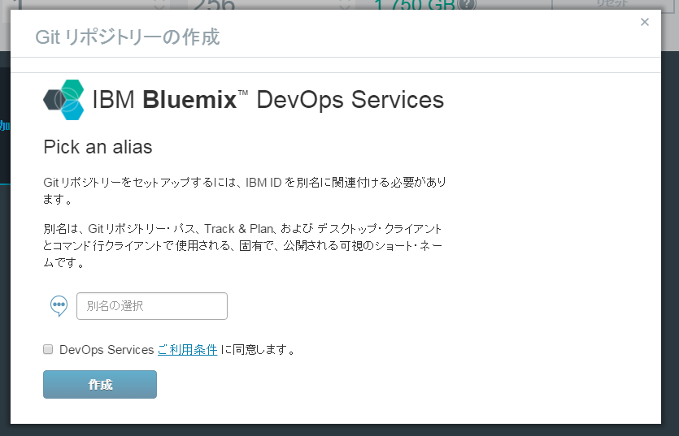
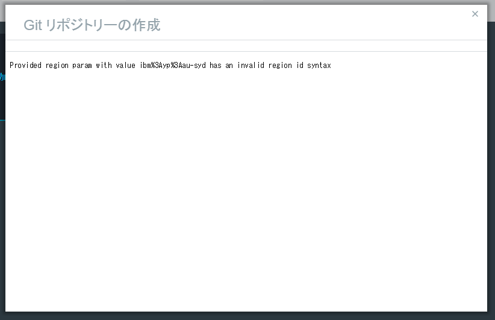
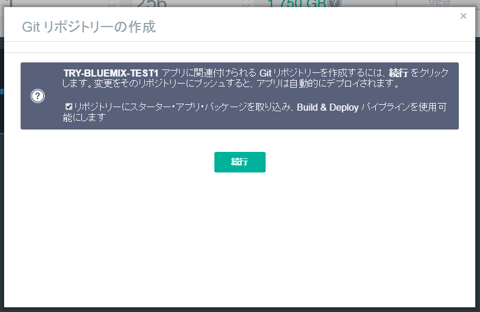
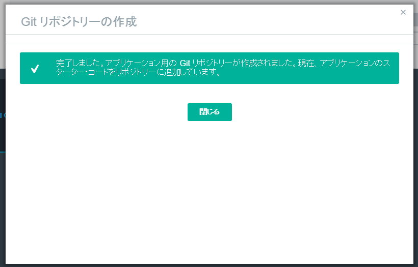
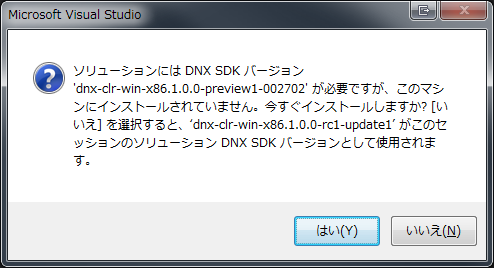
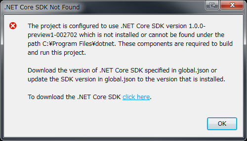
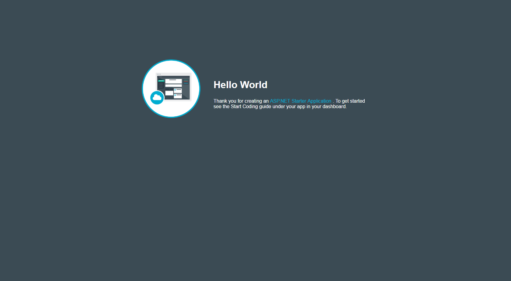

前回はアプリの下地を作りました。
開発の方法
Bluemixでの開発は下記の2つが提供されています。
- CF コマンド・ライン・インターフェース
- GIT
CF コマンド・ライン・インターフェース
Cloud Foundry コマンド・ライン・インターフェースの略のようです。
どうも、Githubで開発されているツールの模様。
Cloud Foundryは、オープンソースのPaaSソフトウェアとのこと。詳しくはWikiで。
ローカルでこのツールを使って、編集したコードをアップし、デプロイする模様。
Git
Gitを使って開発をします。
説明を見ると、Web上のエディターで編集し、開発を進めていくスタイルのように見えます。
でも、せっかくASP.NETを選択したので、Visual Studioを使いローカルで開発したいです。Visual StudioならGitも統合されているので。
Gitを使う
というわけでGitを使うための設定です。
- ダッシュボードに移動し、アプリケーション一覧から、前回作成したアプリをクリックします。
- 画面右側にある「GITの追加」をクリックします (ここではタイミング的に表示されていませんが..)
- Gitリポジトリーを作成します。ここの名前はユニークである必要があります。また、この名前はgitリポジトリのurlに当然使われます。例えば、https://hub.jazz.net/git/<ここの名前>/<アプリの名前>

ご利用条件への同意のチェックは必須
- 作成された?
OK?
- 無慈悲なエラー

どういうことだってばよ…
- 元の画面に戻ったので、もう一度「GITの追加」をクリック。チェックは外して「続行」をクリックしました。

チェックの意味はわかりません
- 今度は成功

本当に大丈夫?
- 右上にGitリポジトリのurlが追加されたました
できたー
Visual Studioで編集する
Gitリポジトリができたので、ローカルにクローンして、コードを編集してみます。
クローンする際、認証を求められますが、当然これはIBW BluemixのユーザーIDとパスワードです。
クローンすると、下記のような構成でクローンが完了します。
dotnetstarter.slnというのがあるので、ダブルクリックして、Visual Studioを起動してみましょう。
が、なんか警告が….

ふむふむ。SDKが必要なのね。じゃぁ「はい」。
またエラーだってばよ
どうしろと。
わからないので、Google先生に聞いてみる。
dnx-clr-win-x86.1.0.0-preview1-002702がキーワードだが、日本語で検索にヒットしない…..
ということで、英語に変えたら、Stackoverflowで解決策が。

{kind=link}
{kind=link}
{kind=link}
{kind=link}
{kind=link}
{kind=link}
{kind=link}
{kind=link}
{kind=link}
{kind=link}
{kind=link}
曰く
This error is message usually an indicator that a previous installation (.NET Core rc1 or some of the rc2 nightlies) of .NET Core Tooling/Framework wasn’t uninstalled. To validate it, go to the “Control Panel” > “Programs and features” and search for “.NET Core” or “Microsoft .NET Core” and uninstall any previous version. Then install the correct .NET Core runtime and tooling version for RC2 and it should work.
とのこと。
つまり、.NET Coreの古いバージョンが入ってるから、コントロールパネルのプログラムと機能で、**.NET CoreまたはMicrosoft .NET Core**を探して、アンインストール。その後、正しいバージョンをインストールすれば動く、とのこと。
が、そんなアイテムは見つからない。
もう少し調べると、tnakamura様がVisual Studio 2015 の ASP.NET 5 プロジェクトを Windows7 でビルドするには PowerShell 3.0 以上が必要だったというそのものズバリな記事を公開していました。
記事に従って、関連コンポーネントをインストールし、Windows再起動後、ソリューションを開き直すと、無事に最初のダイアログが表示された後、Visual Studioが開き
ませんでした。
まだ何かが足りないので、調べていくと、そもそも.NET coreがインストールされていないのでは？ということに気づき、.NET Core Tooling Preview 2 for Visual Studio 2015をインストールしました。
インストール後、再起動して、再度Visual Studioを開くと、先ほどのダイアログは表示されず

すこし違うエラー
{kind=link}
というダイアログが。
内容は、.NET Core SDK version 1.0.0-preview1-002702がインストールされていないか、C:\Program Files\dotnetの配下に見つからない、という内容です。
また、global.jsonに記載された.NET Core SDKをインストールするか、global.jsonの記載内容を更新するべき、とも書いてあります。
インストールは済んだはずなので、global.jsonの内容を書き換えます。
1 | { |
にします。versionの文字列は、コマンドプロンプトから
1 | dotnet --version |
と入力することで、
1 | C:\dotnet --version |
のような文字列を取得できるので、それをそのまま貼り付けるだけです。
これで、エラーがなくなりビルドが通ります。
コミットしてみる
とりあえず、Blumix側でアプリを動かしてみます。
ダッシュボード上で「経路」と記されているurlをクリックすると、Webページが開きます。

Hello World
{kind=link}
これを少し書き換えます。
index.htmlの「Hello World」を「こんにちわ」に変更して、コミット、プッシュを行います。
その後、Bluemixのダッシュボードを見ると、アプリが自動的にデプロイを開始し、再起動し始めました。
しかしながら、アプリが停止しました。
{kind=link}
ソースの変更点は、index.htmlとproject.jsonだけです。
メッセージを日本語に変えたくらいで落ちるとは思えないので、.NET Core SDKのバージョンがまずいように見えます。
Conclusion
動く段階まで来ましたが、ソースの変更で動かなくなりました。次回修正。